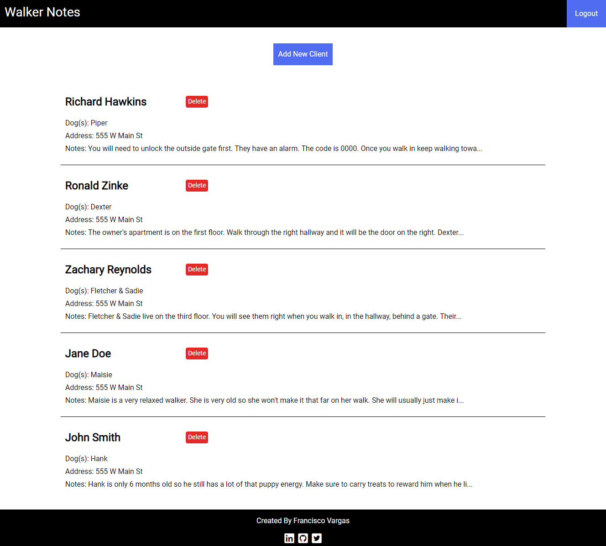

Pet Log
Keep track of your dog's information. This app allows you to track their general, vet, and medical info all in one place.
Walker Notes
As a dog walker, it can be a pain finding a universal place to track of all of your important client information. This app helps keep track of everything from home access info to days that dogs are scheduled to be walked.
